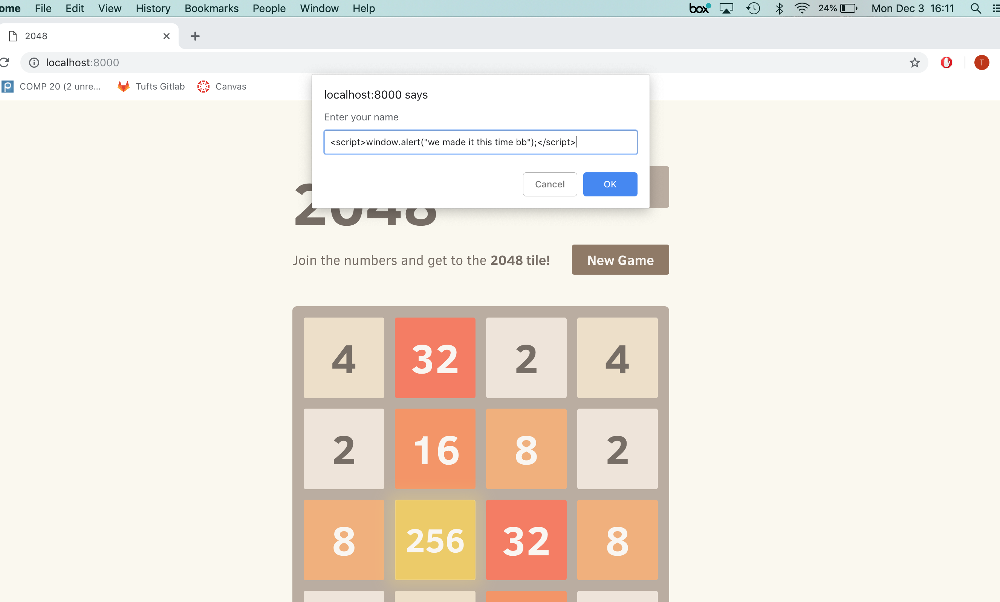
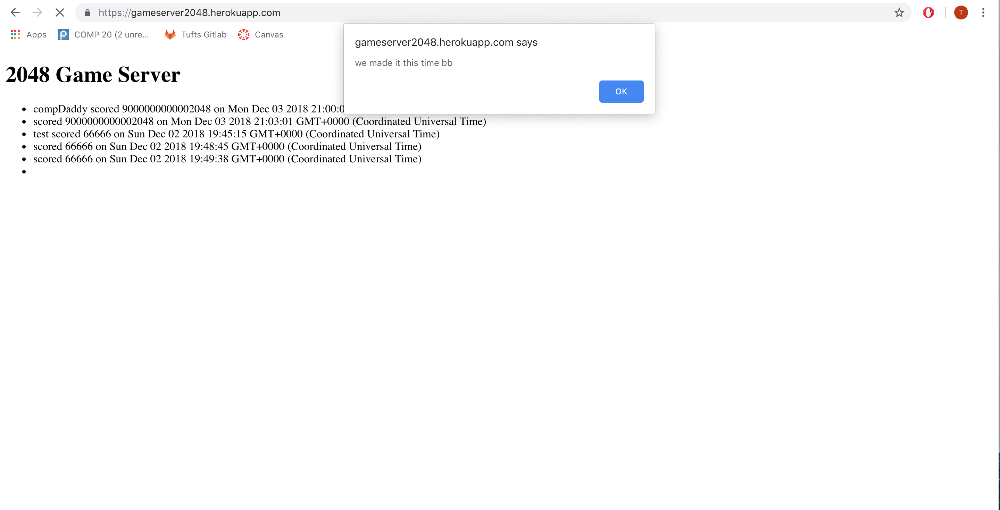

The product I tested is an app that saves and displays high scores that users get when playing 2048. The app recieves data from the 2048 game and writes it to a mongoDB database. When users visit the app, they can see all of the scores and when visiting /scores.json they can input a query string under username to see only scores for that username. I have been instructed to conduct penetration tests on the app. I am to find security flaws with the program and document them so that the overall security of the application can be improved.
First, I ran through the different aspects of the app as a user would. The first potential issue I noticed was the username input section. I then looked over the home screen and scores.json section of the application. After this, I read over the application's code to try to gain a better understanding of how the programs run. The first things I looked for were any places where the program uses user input. I found two different instances of user inputs. The first, when the user inputs their username after the game is finished. This is a prime opportunity for Cross Site Scripting (XSS) to occur. There were no programmed defenses for this section, so I tried inputing a basic javascript alert for the username. Upon visting the home page of the application, I was greeted by the alert I had input, signifying a vulnerability to XSS. The other user input is connected to the mongoDB database. This occurs when the user inputs the username they would like to see the scores for in the query string. This is a spot where a malicious user could gain access to the entire database by using NoSQL injection. Using Postman, this method was tested, demonstrating the vulnerability of the database to malicious requests. The third place I wanted to try was the submit page. Inherently, this page requires some type of submission, and using the right framework, can be exploited with NoSQL injections as well. Looking over the code, the submission was required to be in the x-www-form-urlencoded format. Using Postman again, I was succesfully able to inject data into the database. Through this method, I was even able to perform XSS, adding a user input pop-up window to the application upon loading.
During my penetration testing, I found four major security issues. (Disclaimer: That does not mean my findings are the only security issues that may exist within the application). The first issue found was a XSS vulnerability from the game page itself. After the user finishes their game, they are prompted to enter their username. In this field, they can input javascript code that, if written correctly, will affect every user who visits the application's homepage. This can come in the form of pop-ups, redirections, or any other javascript functionality that currently exists. The second security issue found involved NoSQL injections from the scores.json page. The app requires the user to enter a query string into the url containing the username they are searching for. In this case, entering a "true" statement, such as "username[$ne]="a"" will pull up all the information for every username that is not "a". This provides hackers with access to all the data in the database, and can potentially expose sensitive information that could be stored on the database. The third issue uncovered is another NoSQL injection, this time from the /submit section of the app. Here, the game sends the required data to the database for storage. A third party could penetrate this system using simple computre science tools to input falsified data. The fourth issue is somewhat wrapped in with the third issue. From this NoSQL injection, a third party could again perfom XSS and add malicious code to the program, again interrupting and affecting every user who accesses the home page of the app.
This issue arises on the game page for 2048. Specifically, it occurs when the user is prompted to input their username.
This issue is a very severe issue. If a user is capable of inputing javascript code into the database, they can cause a wide variety of damage to every other user who access the main home page of the app itself.
This issue involves inputing javascript code into a user input segment. When prompted, in this case for a username, the user can instead input the code. Anytime the program tries to use the username, it will run the javascript code that was input. For this app, that happens anytime the user goes to the homescreen. I found this problem by playing through the game, noticing the user input for the username, investigating the code to check for security around the input, and finally testing the issue.
 These photos show me inserting the javascript to the username prompt, and the ensuing pop-up window at the home page.